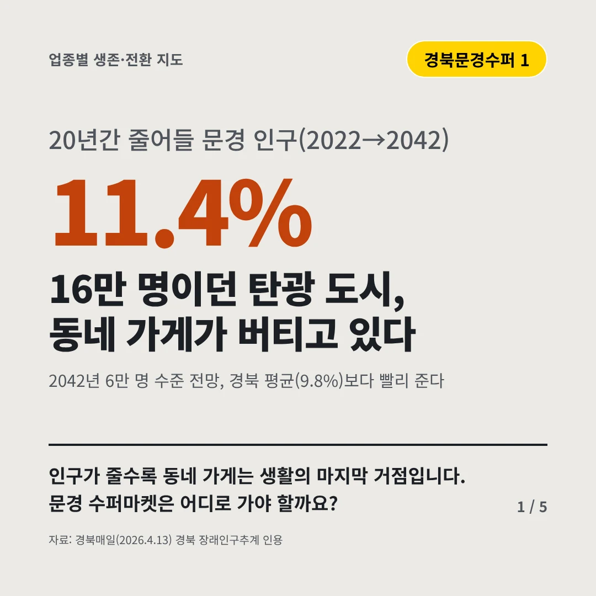
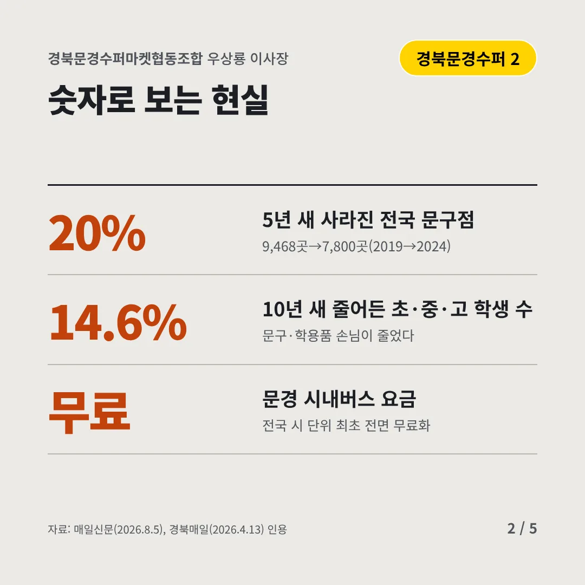
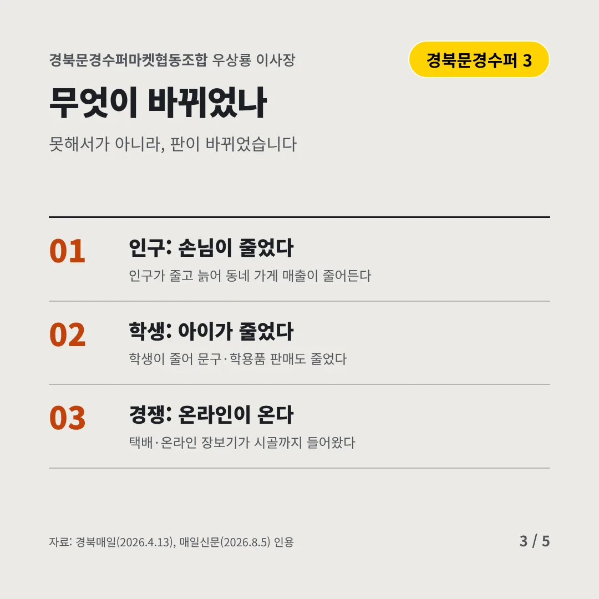
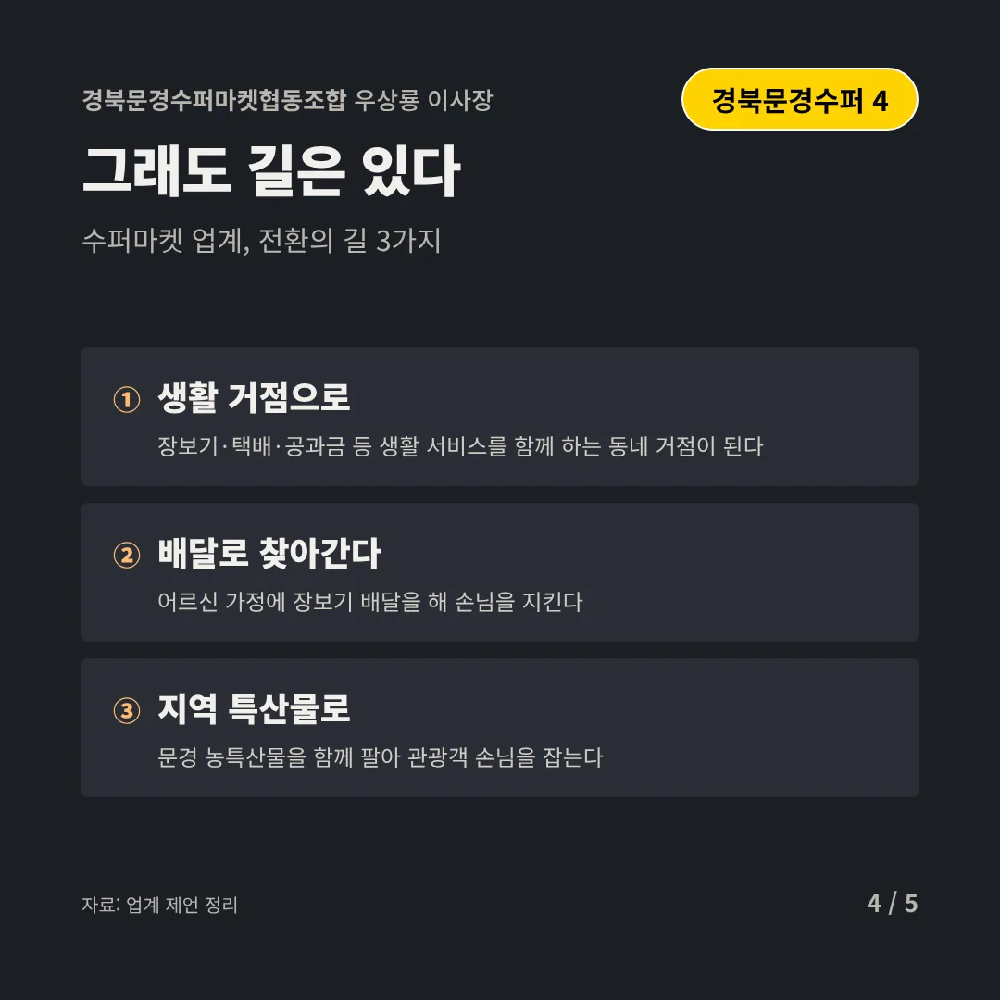
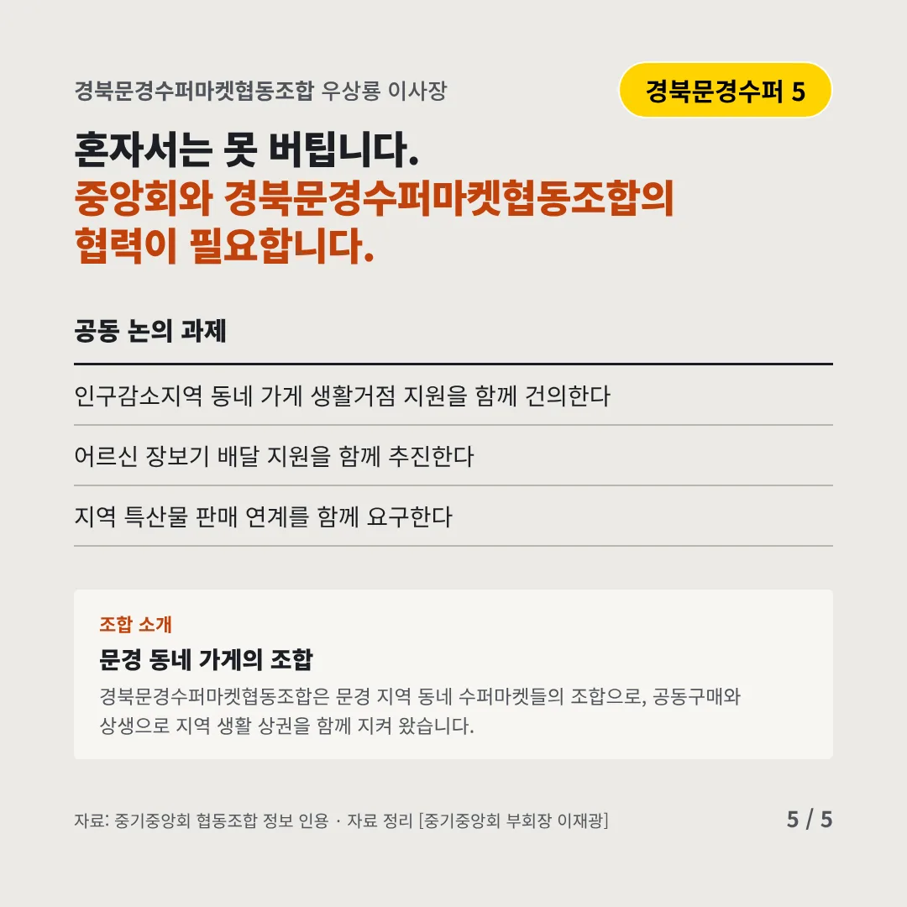
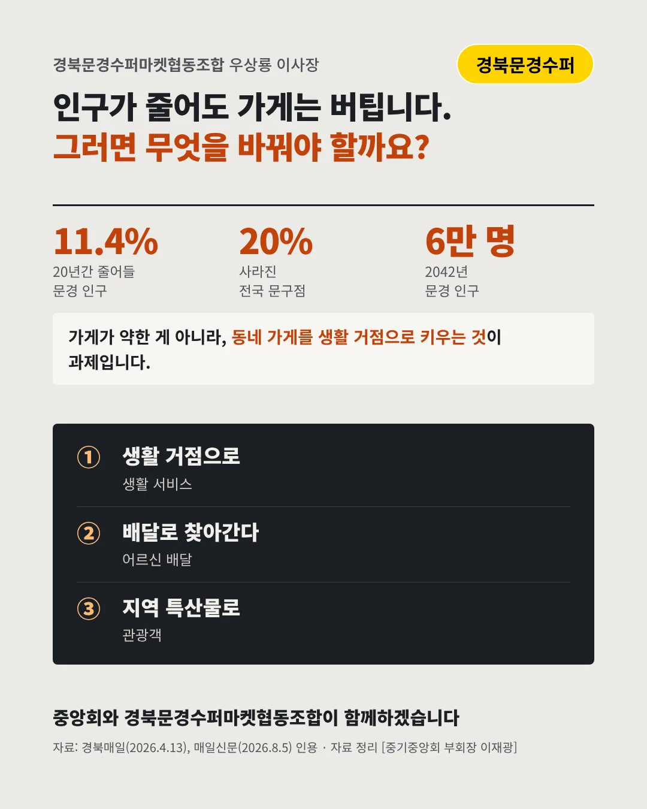

경북문경수퍼마켓협동조합
16만 명이던 탄광 도시, 동네 가게가 버티고 있다
11.4% 20년간 줄어들 문경 인구(2022→2042)






인구가 줄수록 동네 가게는 생활의 마지막 거점입니다. 문경 수퍼마켓은 어디로 가야 할까요?
숫자로 보는 현실
- 20%5년 새 사라진 전국 문구점9,468곳→7,800곳(2019→2024)
- 14.6%10년 새 줄어든 초·중·고 학생 수문구·학용품 손님이 줄었다
- 무료문경 시내버스 요금전국 시 단위 최초 전면 무료화
무엇이 바뀌었나
- 인구: 손님이 줄었다인구가 줄고 늙어 동네 가게 매출이 줄어든다
- 학생: 아이가 줄었다학생이 줄어 문구·학용품 판매도 줄었다
- 경쟁: 온라인이 온다택배·온라인 장보기가 시골까지 들어왔다
그래도 길은 있다
- 생활 거점으로장보기·택배·공과금 등 생활 서비스를 함께 하는 동네 거점이 된다
- 배달로 찾아간다어르신 가정에 장보기 배달을 해 손님을 지킨다
- 지역 특산물로문경 농특산물을 함께 팔아 관광객 손님을 잡는다
한 장 요약

조합 소개
경북문경수퍼마켓협동조합은 문경 지역 동네 수퍼마켓들의 조합으로, 공동구매와 상생으로 지역 생활 상권을 함께 지켜 왔습니다.
자료: 경북매일(2026.4.13), 매일신문(2026.8.5)